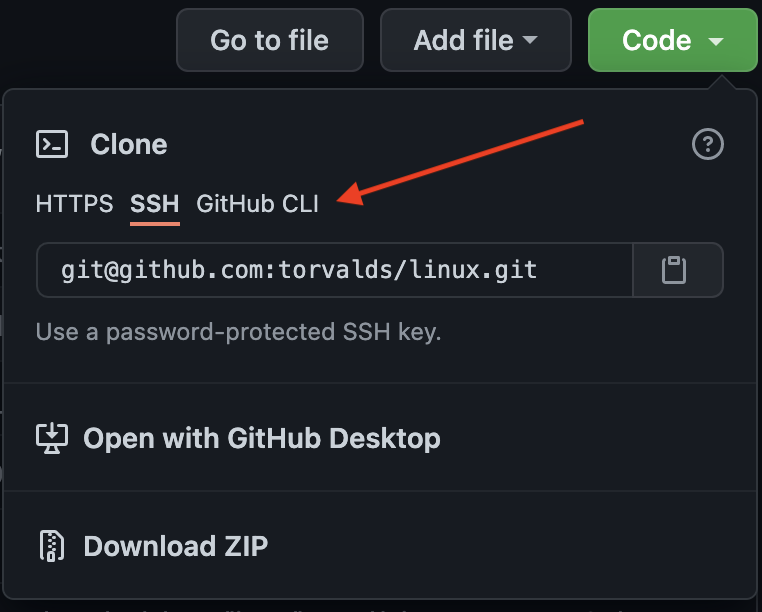
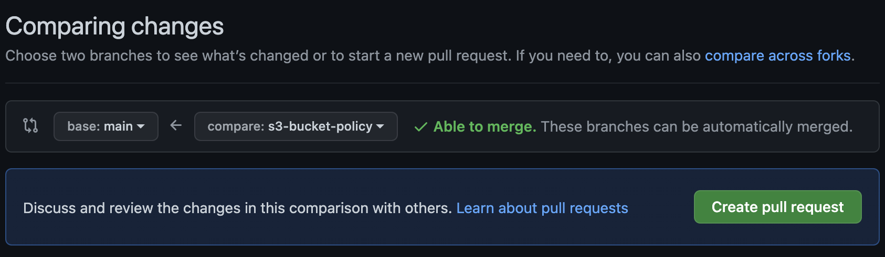
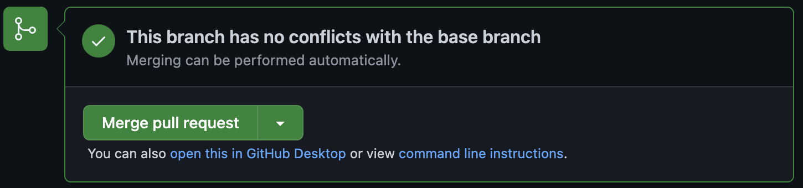

The Basics of Git
Who am I?
Craig Reeder
Cloud Engineer @
Uturn Data Solutions
I love tooling
I really love tooling
Git is one of my favorite tools
What is Git?
Distributed Version Control Software
Created by Linus Torvalds in 2005
(To manage Linux source code)
Though it's been largely developed by others since
Quick Note: GitHub
GitHub is just a hosted platform for Git
And some other cool stuff

Git is to GitHub as Burgers are to BurgerKing
What does git do?
Tracks changes
Keeps history
Enables collaboration
Everyone has a full copy
This has proved useful for recovery purposes
Why use git?
Ever done this?
project/
config-4.3.20
config-1.5.21
config-7.8.21
config-live
Never do that again!
Git has history
All changes
(since the beginning of time)
Easily reversable
Who broke it?
$ git log
Author: Travis Langhals <tlanghals@example.com>
Date: Fri Sep 3 12:13:57 2021 -0400
Remove the Fizz from the Buzz, it's not needed
(spoiler alert: it was needed)
Great! How do I use it?
Creating a new repository:
$ git init
This creates a new repository in the current directory
Time to make some changes

To save your changes, you need to tell git you want to include them
This feels silly, but this means that you can select which changes to actually save, or break them into smaller chunks
Stage your changes:
$ git stage foo.html bar.js
Finalize your changes into the git history:
$ git commit
This will prompt you in an editor for a message.
It is possible to change which editor it uses.
https://bit.ly/3hdSdNq
Don't have commitment issues
Commit early and often
It's not that easy! I got lost!
See the current state of things:
$ git status
It'll show something like this:
On branch main
Changes not staged for commit:
(use "git add <file>..." to update what will be committed)
(use "git restore <file>..." to discard changes in working directory)
modified: index.html
modified: themes/dark.css
Working locally cheat sheet:
$ git init # once, for a new repo
# make changes to files
$ git stage file.txt
$ git commit
Now let's work as a team
Getting an existing repository:
$ git clone git@github.com:torvalds/linux.git
Quick Note: Authentication
This uses ssh to clone:
$ git clone git@github.com:torvalds/linux.git
This uses https to clone:
$ git clone https://github.com/torvalds/linux.git
Select it here on GitHub

SSH relies on the key you already created
HTTPS will prompt you for credentials every time
(Unless you set up a credential manager)
SSH works better with most automation
Back to the commands
Someone made a change to a repository you cloned
Oh no! What do I do? 😢
Pull changes from remote:
$ git pull
Now you're up to date!
Stage your changes:
$ git stage foo.html bar.js
Finalize your changes into the git history:
$ git commit
Commiting is local only
To share your changes:
$ git push
The first time you do this in a branch, you'll get an error message with an additional flag. Follow the instructions.
One more important concept
Git is a tree

(sometimes displayed sideways)
Trees have branches
Git has branches!
(and a trunk)
You'll hear tree terminology used a lot around git
The default branch is usually main
Sometimes it's called "master"
It'll be master if you init on your machine. This is a simple configuration option.
Create a new branch:
$ git branch widget-fix
Change to a branch:
$ git checkout widget-fix
Merging is the act of combining branches
We're not going to cover manually merging
With GitHub, you can create a pull request
Also with most hosted git repos
This is a request to merge your branch into another
Typically main
Best practice with a pull request is to have someone else review your code
GitHub has useful commenting and approval tools
GitHub Flow:
Steps:
Step 1) Make a feature branch
Step 2) Make your changes
Step 3) Commit your changes
Step 4) Push your changes
Step 5) Make a Pull Request
Step 6) Fix any feedback from review (repeat 2-4)
Step 7) Merge the PR
Step 1) Make a feature branch
$ git branch widget-fix
$ git checkout widget-fix
Step 2) Make your changes
Step 3) Commit your changes
$ git stage fixed-files.txt
$ git commit
Step 4) Push your changes
$ git push
Step 5) Make a Pull Request

Step 6) Fix any feedback from reviews
And repeat steps 2-4 (make changes, commit, push)
Step 7) Finally, merge the PR

The final reviewer will likely do this step
Steps:
Step 1) Make a feature branch
Step 2) Make your changes
Step 3) Commit your changes
Step 4) Push your changes
Step 5) Make a Pull Request
Step 6) Fix any feedback from review (repeat 2-4)
Step 7) Merge the PR
Some final thoughts
VSCode is git aware
It will show you what has changed since your last commit
All of the git commands can be done in VSCode with context menus
Look for the "source control" icon on the left
While I prefer the commandline, this is an easy way to get started.
.gitignore is a special file that tells git which files to ignore.
Those files won't ever be staged or commited
?
Now for some hands on!
Try these commands (or do the following in VSCode):
$ git init # once, for a new repo
$ git stage file.txt # create file.txt first
$ git commit
$ git status
$ git branch widget-fix
$ git checkout widget-fix
$ git clone <url> # new repo! get this from github
$ git branch your-username
$ git checkout your-username
$ git stage file.txt # create file.txt first
$ git commit
$ git push # follow the instructions
fin.